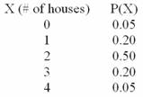

2.0
0.2
1.0
0.5
None of the above
0.2236
0.8944
0.5477
0.8
0.75
0.25
0
6
7
5
4
12
1/2
1/6
7/12
13/18
5/18
0.4219
0.45
0.5781
0.8965
0.0264
0.7363
0.2637
Each outcome is dependent on the previous outcome
Each trial results in mutually exclusive outcomes
The probability of success remains the same from trial to trial
The outcome of a trial depends on the number of trials
Both B and C are true
P(x = 1)
P(x ³ 1)
1 - P(x ³ 1)
P(x = 0)
1 - P(x £ 1)
3/10
5/8
3/8
7/10
1/10
5/7
1/14
3/7
Prime number values only
Positive values only
Non-zero values only
An infinite number of values over any range
A finite number of values over any range that includes neither minus infinity nor positive infinity
This is the end of the test. When you have completed all the questions and reviewed your answers, press the button below to grade the test.